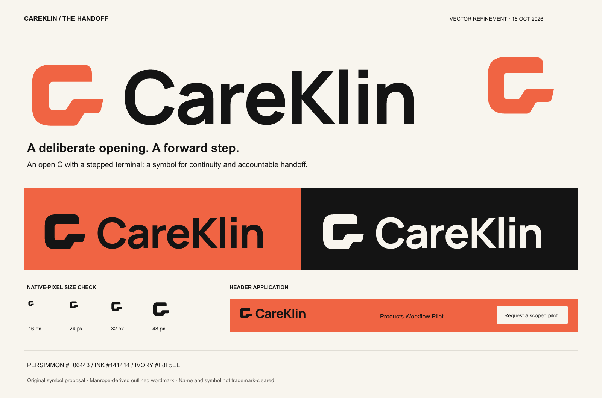

The Handoff
An original symbol proposal and a carefully spaced wordmark for the selected orange-and-black website direction. This is a recommended identity, not a trademark-cleared mark.

The design decision
The symbol is an open C with a lower terminal that steps forward. The opening relates to the missing visit; the forward step is the next accountable handoff. These are intended associations, not meanings every viewer will necessarily infer. The mark remains simple enough to identify the company without requiring the story.
The wordmark uses outlined Manrope at weight 750 with adjusted letter spacing. It is not a newly drawn typeface. The capitalization preserves the exact name CareKlin. Its open counters and less-condensed proportions give the header a calmer rhythm than the website’s forceful display headlines. The four-square placeholder from the selected webpage concept is replaced.
Three ideas were considered conceptually: retaining the four-square schedule motif, using a combined CK monogram, and developing an open C with a forward step. The square motif is easy to reproduce but weakly connected to the name; a CK monogram risks adding unnecessary detail. The open C gives the strongest balance of name recognition, workflow meaning and small-size simplicity. This is a design judgment, not a measured audience preference.
What the research changed
| Official-source evidence | Implication for CareKlin |
|---|---|
| Axxess explicitly describes its logo as a heart and key in its HomeCare app guide. | Avoid heart/medical symbolism and distinguish CareKlin through an operational idea. |
| Birdie’s designer account discusses a bird character and accessible typography. This does not establish the character as its logomark. | Warmth can come from type, proportion and behavior; CareKlin does not need a mascot. |
| HHAeXchange uses “Move care forward” positioning; AlayaCare describes a product-logo refresh while retaining its company logo. | CareKlin needs one consistent company mark across its five proposed modules. Do not create five unrelated product logos. |
| Pentagram’s Abridge project connects an abstract symbol and lettering to a service-specific idea. Remission Biome offers a typography-led healthcare identity precedent. | Use a coherent design idea across symbol, type and motion. These are process references; their artwork was not copied or included. |
Research was conducted through Perplexity’s high research preset. It covered official sources for HHAeXchange, Axxess, AlayaCare, Birdie and Cera, plus studio case studies and nearby names. Where official text did not describe a logo’s visual form, no visual claim was inferred. This was not an exhaustive image-similarity or registered-design search.
Name findings: unresolved before adoption
The research did not verify an exact CareKlin use, but that is not evidence of availability. Nearby names found include CareClinic, which markets healthcare software to providers and payers, CareKin, a family care-coordination app, and CareClin, a consultation service. These findings merit a fuller name check; this report makes no legal finding that any is conflicting.
USPTO guidance explains that similarity can involve appearance, sound, meaning and commercial impression alongside related goods/services. See likelihood of confusion and comprehensive clearance searching. Neither a full trademark-database review nor domain availability verification was performed. The symbol also needs a separate similarity review before adoption. No ® or ™ is included.
Usage rules
- Primary: orange symbol with ink wordmark on white or ivory. On the orange website header, use the all-ink lockup.
- Reverse: ivory symbol and wordmark on ink. Keep the logo flat; do not add gradients, bevels, outlines or shadows.
- Clear space: keep at least one main-stroke thickness around the symbol and full lockup. Use more where space allows.
- Minimum starting sizes: full wordmark 140 CSS px wide; standalone symbol 24 px preferred. The 16 px icon is a favicon fallback and loses some corner nuance. Test again in the final browser/device context.
- Favicon: use the supplied square orange tile with the black symbol. The master standalone symbol itself has no enclosing tile.
- Motion: the lower terminal may extend into a section guide line in a separate brand animation. The settled logo must return to the supplied shape. Keep the header logo still while visitors read; provide a reduced-motion state.
- Do not: stretch, rotate, change the opening, tighten wordmark spacing arbitrarily, substitute a generic C, or recolor every module’s company mark.
Files and verification
logo-primary.svg, logo-black.svg, logo-reverse.svg contain vector paths, including outlined lettering; they do not depend on an installed font. Matching transparent PNGs are supplied. Symbol-only variants, favicon.svg, a multi-size favicon.ico and 16/24/32/48/64/180/512 px icons are included.
The concept was first explored with built-in image generation. The deliverable mark was reconstructed as clean vector geometry and the wordmark was set from Manrope’s licensed font source; the SIL Open Font License is included. The vector refinement is the implementation source of truth, not the initial raster study.
Actual renders were visually inspected in primary, monochrome, reverse and a header application. Native 16, 24 and 32 px icon renders were also inspected with pixel enlargement. The opening and forward step survive, with reduced corner detail at 16 px. SVG parsing and PNG dimensions/transparency were checked. These checks do not establish brand recognition, legal distinctiveness or print-production suitability.